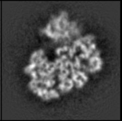

| .OPERATION: | FRC | ; Fourier ring correlation and resolution |
| .FIRST INPUT IMAGE: | sav_frc_1 | ; First image (input) |
| .SECOND INPUT IMAGE: | sav_frc_2 | ; Second image (input) |
| .RING WIDTH (RECIPROCAL SPACE UNITS) & MASKING RADIUS (PIXELS): | 0.5, 0 | ; Shell size, no masking |
| .PIXEL SIZE (A) & RESOLUTION CUTOFF: | 2, 0.5 | ; Pixel size, 0.5 cuttoff |
| .FRC OUTPUT DOC FILE: | frc_doc | ; Doc file (output) |
| .GNUPLOT FILE: | frc_plot.gn | ; Plot of FRC curve (output) |
| FIRST INPUT IMAGE | SECOND INPUT IMAGE | |
|---|---|---|
|  | |
| sav_frc_1 | sav_frc_2 |
| OUTPUT FRC DOC FILE (TRUNCATED) |
|---|
| frc_doc |
| OUTPUT FRC PLOT FILE |
|---|
| frc_plot.gn |